관리도에서 이상 구간을 찾는 일은 규칙 엔진이 합니다. AI는 그 결과만 받아, 무엇부터 점검할지 순서를 붙입니다.
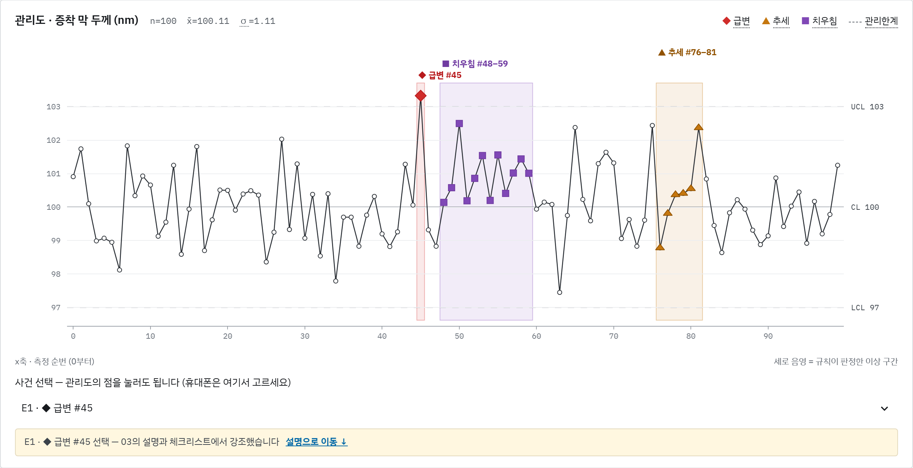
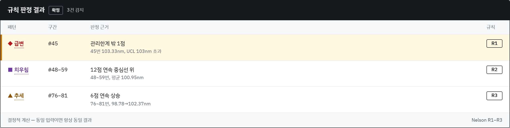
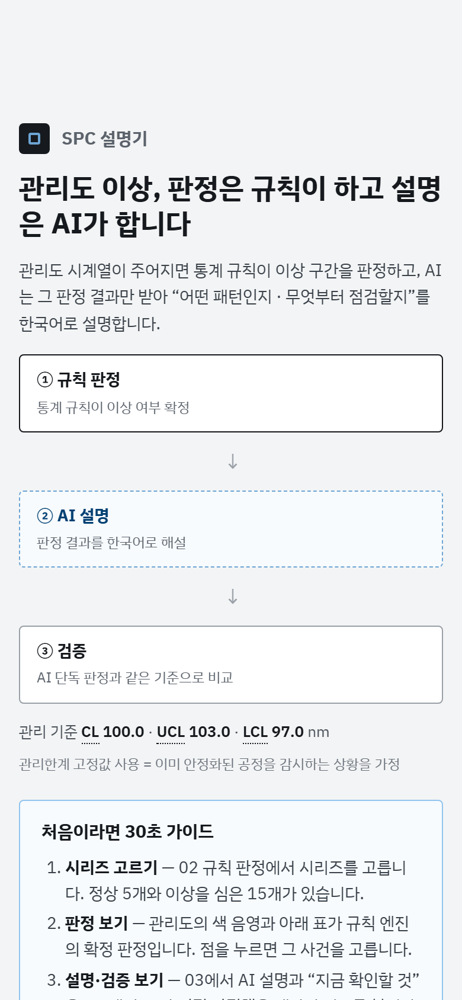
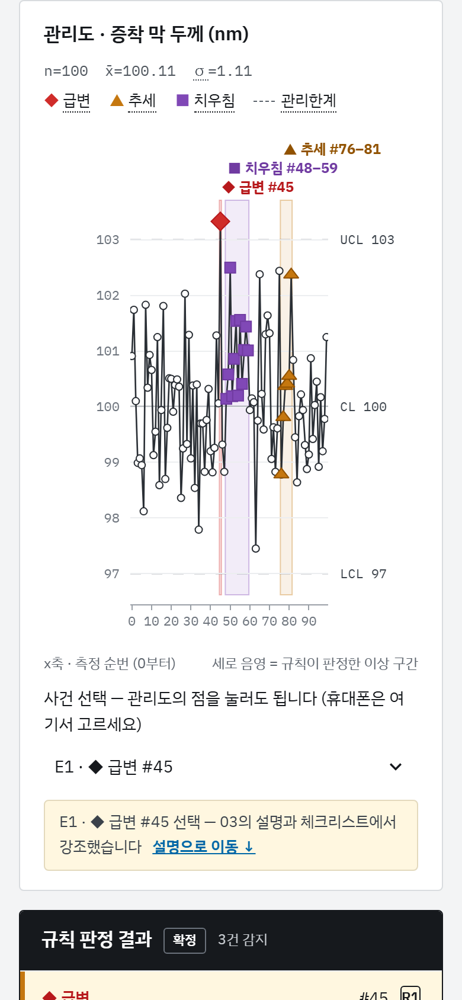
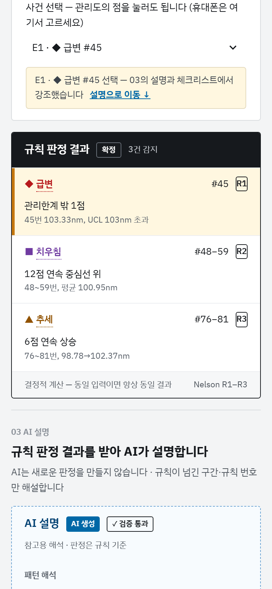
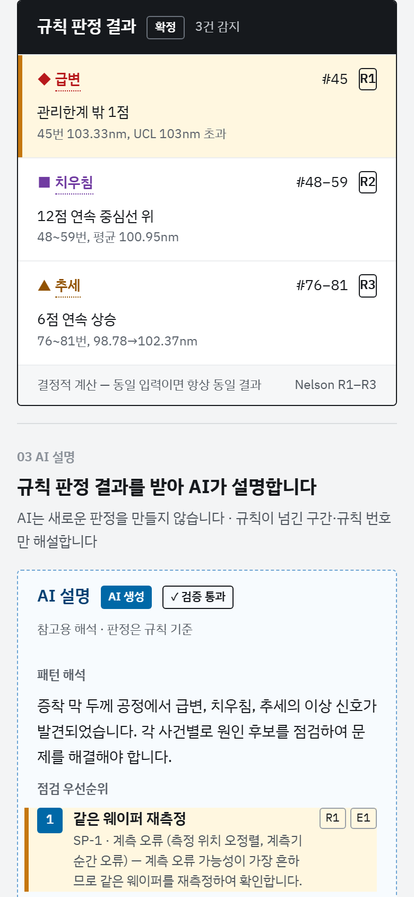
급변, 치우침, 추세 세 가지를 통계 규칙(Nelson R1~R3)으로 판정합니다. 같은 입력이면 항상 같은 결과입니다.
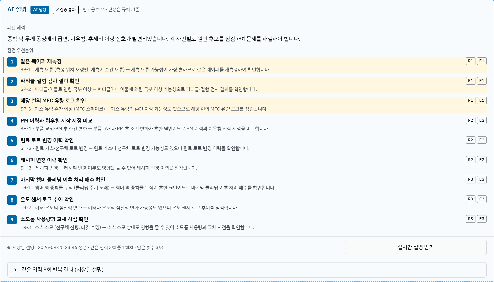
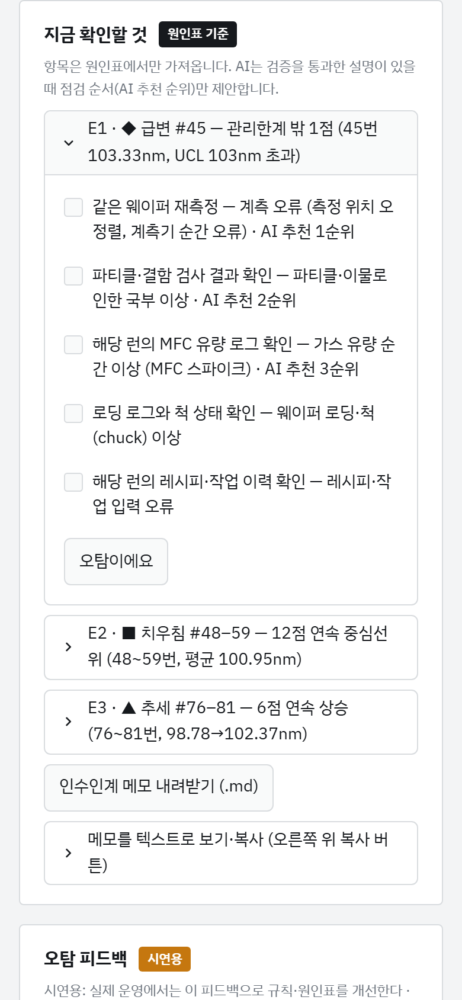
규칙이 넘긴 구간과 원인표만 받아 점검 순서를 고릅니다. 출력은 매번 형식, 원인표, 판정 일치를 검증합니다.
규칙 정의대로 이상 21개를 심은 가상 관리도 20개로, 규칙 엔진과 AI 단독 판정을 같은 기준으로 채점했습니다. AI는 모델마다 3번씩 돌렸습니다.
| 판정 방식 | 찾은 이상 | 오탐 (회당 평균) | 걸린 시간 |
|---|---|---|---|
| 규칙 엔진 | 21/21 | 6건 | 0.48ms |
| gpt-4.1-mini | 14/21 | 103건 | 2.1초 |
| gpt-6-sol | 21/21 | 6건 | 10.8초 |
시간은 규칙 엔진 시리즈 1개, AI 호출 1번 기준.
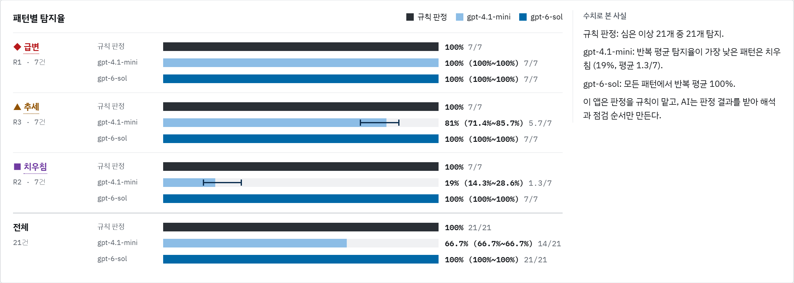
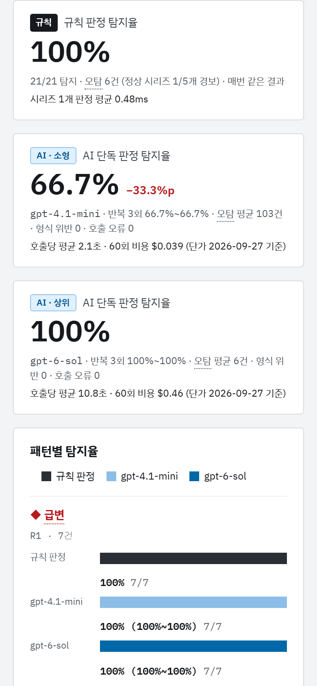
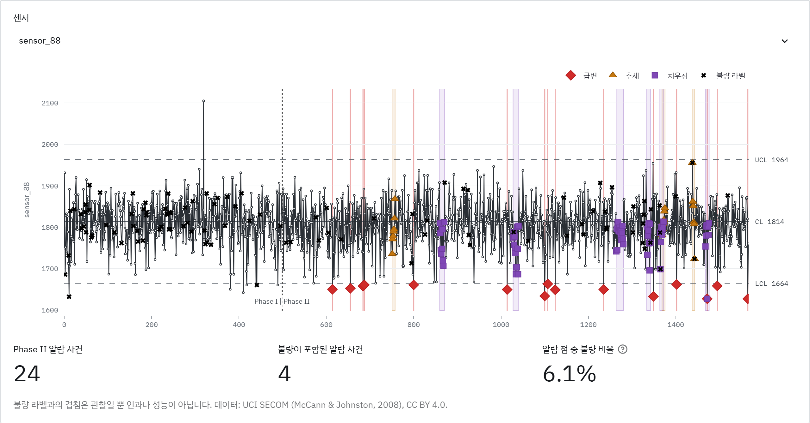
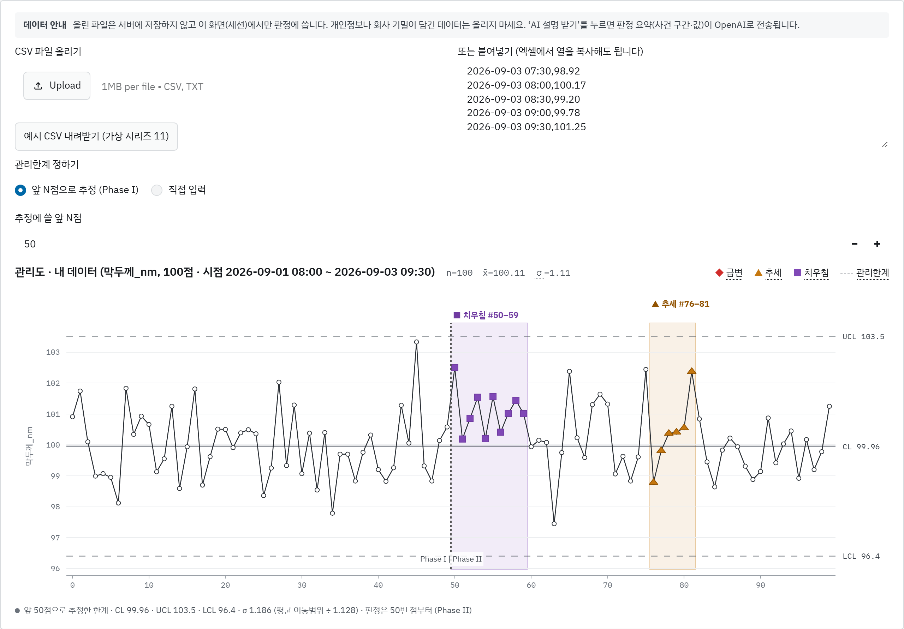
공개 반도체 공정 데이터(UCI SECOM) 센서에 같은 규칙을 적용했습니다. 정답이 없어 탐지율은 따지지 않았습니다. 내 CSV를 올려도 같은 규칙으로 판정합니다.
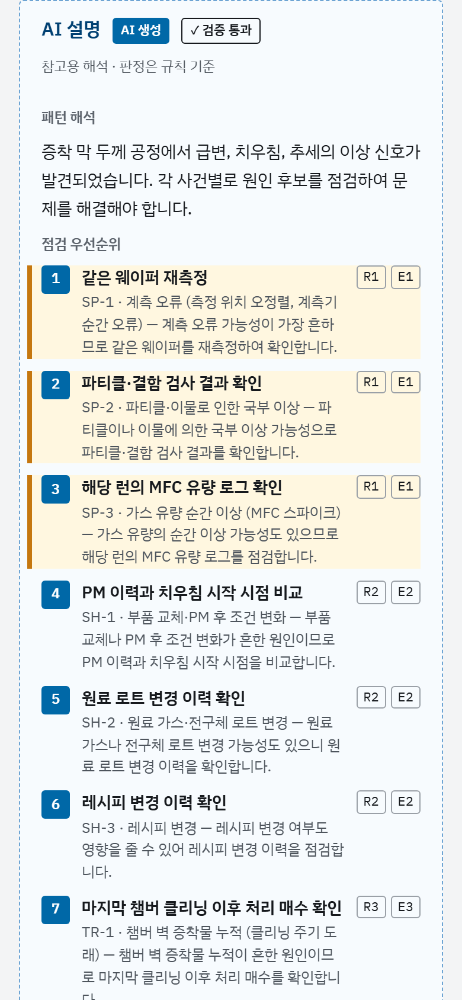
배포 앱에서 시리즈를 고르고, 점을 누르고, 내 CSV를 올려 보세요. 코드와 실험 기록은 저장소에 있습니다.